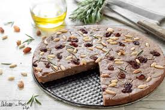

Ingredientes:
-
300 g harina de castaña
-
1 cucharadita romero
-
4 cucharadas aceite de oliva virgen extra
-
50 g piñones
-
50 g uvas pasas
-
1/2 cucharadita sal
-
3 cucharadas azúcar de coco
-
150 ml agua
Elaboracion paso a paso:
-
Remojar las pasas en agua caliente durante 20 minutos.
-
Precalentar el horno a 200 ºC.
-
En un bol, mezclar la harina de castaña, el azúcar, la sal y el romero. Añadir el aceite de oliva y el agua poco a poco hasta formar una masa espesa.
-
Por último, añadir las pasas escurridas y los piñones. Mezclar hasta integrar homogéneamente.
-
Forrar un molde redondo con papel vegetal y extender la masa de forma homogénea con un grosor menor a 2 cm.
-
Rociar con aceite de oliva virgen extra y hornear a 200 ºC durante 45-60 minutos, hasta que la superficie se asemeje a la tierra cuarteada.